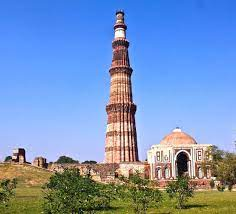
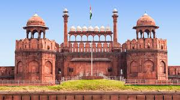
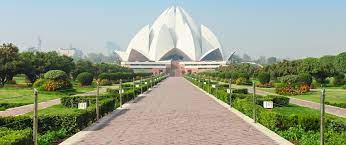
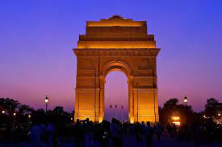

is like the buzzing heart of India, full of life and energy.
It's a city where you can see history everywhere you look, from grand old buildings like the Red Fort to ancient markets that have been around for centuries. But Delhi is also super modern, with sleek skyscrapers and fancy malls popping up all over the place. It's a city that never sleeps, with people always out and about, selling things on the streets or rushing to work. What's really cool about Delhi is how it brings together people from all different backgrounds and cultures. You can find delicious food from all over India, and maybe even meet someone from halfway around the world. Delhi is like a giant melting pot of old and new, tradition and innovation. It's a place where you can feel the pulse of India, past, present, and future, all at once.
Delhi is also a food lover's paradise. From street food like spicy chaat and buttery parathas to fine dining restaurants serving up delicacies from all over the world, there's something to satisfy every palate. And let's not forget about the bustling markets, where you can shop for everything from traditional handicrafts to the latest fashion trends.
But perhaps the most fascinating thing about Delhi is its people. It's a city of contrasts, where you'll find the ultra-rich living side by side with the working class. Despite its hectic pace, Delhiites are known for their warmth and hospitality, always ready to welcome strangers with open arms.
In short, Delhi is a city that never fails to surprise and delight. Whether you're exploring its ancient monuments, sampling its diverse cuisine, or simply soaking in the sights and sounds of the bustling streets, there's no place quite like Delhi. It's a city that captures the essence of India in all its glory—a vibrant tapestry of history, culture, and modernity.
To Choose PG:
Click Here